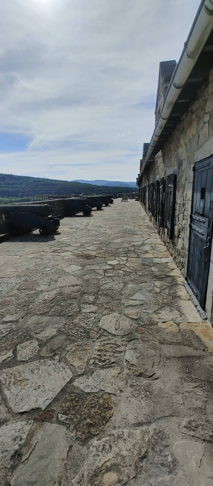

FORT TICONDEROGA
A Walk Through Three Centuries of American History

Introduction
History is different when you're standing where it happened.
It started with a vacation. Every year I take a vacation with family and friends over the summer, usually for about a week in June or July. Usually the itinerary revolves around three things. Rest. Opportunities to use my camera and telescope. And a chance to visit historical places we might never otherwise experience. This year it was suggested we take a trip to Killington, Vermont. A scenic place with lots of trees, water, great stargazing and a proximity to Ticonderoga New York. I didn't yet realize I was traveling into one of the most important stories in American history.
My trip started at a Turnpike stop in Upstate Pennsylvania where my friends from Philadelphia met me to pick me up (While I am from Philadelphia, I’ve been living in Northeast Pa for the past four years). The trip’s first day was an excursion in it’s own right, being a base 8 hour trip from Allentown to Killington, however with stops along the way that trip now spanned some 12 hours. It also just so happened that during this trip there was a severe air quality warning stemming from major wildfires in Canada. This made the trip all the more laborious, as we made stops not only to stretch our legs but also to film waterfalls in upstate New York. As I would learn later, this was a great experience to better understand the trials and tribulations that many a soldier attempting to take a fort In Ticonderoga would themselves experience years before.
The next day after our 12 hour trek we left our B&B in Vermont and undertook our 90 minute ride to Ticonderoga. At one point we pulled up to the ferry to cross Lake Champlain from Vermont to New York. In and of itself a beautiful scene to take in. A sign behind us, covered by foliage, announcing your arrival to Vermont. An 18th century building on the foot of the lake. The lake, beautiful under a clear sunny sky. While waiting for he ferry that would take us across the water to Ticonderoga, I notice a historical marker describing Larrabee’s Point. I am overtaken with awe as I realize I am surrounded by beauty and history all around me, and as the ferry approaches I am unaware of what I about to experience. This was great but what was to come was perspective changing.


Even the road into Fort Ticonderoga is telling a story before you ever step inside.
We return to our vehicle and as the ferry docks...
We return to our vehicle and as the ferry docks we drive onto it. As we park on the ferry my friend pays the toll, almost feeling like paying the toll to cross the river Styx, or better still, paying our first toll as we begin a trip through time. After crossing we are led to a road that itself announces what we are entering. On the left is a banner with George Washington’s unmistakable image. A few moments later is a banner with the image of a cannon overlooking Mount Defiance. Already excited about the prospect of what was next to come, we pull up to the parking lot and what can be seen is King’s Garden. After eating our lunch in the garden, I walk around and take in all there is to see. An old mansion overlooking the lake. Folks in period attire. Other structures that bring me into the 18th century state of mind needed to truly take in and understand what I was experiencing. We then walk through the garden proper (King's Garden deserves an essay of its own) and after we accented Mount Defiance. The views are striking, and really I have no proper words to describe the experience. Even the photos I took don’t really do it justice. Being there is something else completely.

At this point it was time to return and enter the Fort proper. I am already overwhelmed and I haven’t even entered the fort as yet. As we enter the fort itself I am taken by the history and scenic views all around me. The cannons, the period soldiers all around me. As I walk through the fort, past the barracks, I eventually arrive at a narrow staircase leading to the museum. As I walk up the narrow steps I’m struck by something I wasn't expecting. As I do so, it feels as if I’d walked through my wardrobe, entering Narnia. The awe is overwhelming.

Let me share with you the story this place has to tell...
The Fort Wasn't What Made This Place Important
It is tempting to begin the story of Fort Ticonderoga in 1755.
That was the year French forces began constructing the fortress they called Carillon on a peninsula overlooking the southern reaches of Lake Champlain. It provides history with the kind of convenient starting point we tend to like: a date, a structure, a country, and eventually a battle.
But beginning there would already have us looking at Ticonderoga backward.
The fort did not make this place important. The place was important long before anyone built a fort there. And long before nations argued over who owned this place, the land itself had already determined why they would.

To understand why France, Britain, and eventually the emerging United States would repeatedly fight for this relatively small piece of ground, we first have to understand the landscape.
Fort Ticonderoga sits near the connection between two great waterways: Lake Champlain to the north and Lake George to the south. Between them runs the La Chute River, descending through a series of falls that made continuous water travel impossible. Travelers could move along one lake, carry their boats and goods overland around the falls, and continue along the other. From there, additional waterways eventually connected north toward the St. Lawrence and Montreal and south toward the Hudson River and New York. In an era when moving large numbers of people and supplies overland could be brutally difficult, these waterways functioned as something resembling the highways of their time.
Look at a map and the strategic significance becomes difficult to miss.
This was not simply a beautiful place between two lakes. It was part of a natural north-south corridor through northeastern North America.
And Europeans were hardly the first people to understand that.
Long before France and Britain competed for control of the Champlain Valley, Indigenous peoples traveled through this landscape. The portage between Lake Champlain and Lake George served as a route for movement, commerce, diplomacy, and conflict. The region was not an empty wilderness waiting for Europeans to arrive and give it historical significance. It was part of an existing human geography with its own communities, relationships, rivalries, and political interests.

That distinction matters.
Older versions of American history often begin stories like Ticonderoga's with the arrival of Europeans, reducing the people who were already here to supporting characters who appear when they become relevant to French or British ambitions. But Native nations were not simply choosing between somebody else's competing empires. They had interests of their own—territory, commerce, security, diplomacy, sovereignty—and relationships among Indigenous nations could be every bit as consequential as relationships with Europeans.
Those relationships also changed over time.
The Haudenosaunee Confederacy, for example, was itself composed of distinct nations rather than a single political mind, and the pressures of European imperial competition—and eventually the American Revolution—would expose profound disagreements over alliances, sovereignty, and survival. Fort Ticonderoga's own modern interpretation emphasizes that Native communities and individuals pursued different paths as European and later American powers fought across their homelands.
The deeper Indigenous history of the site also survives in more than written accounts. Archaeological evidence around the Ticonderoga peninsula demonstrates Native presence extending well beyond the eighteenth-century military history for which the location is famous. Modern repatriation proceedings involving human remains and funerary objects removed from the peninsula in the twentieth century provide an uncomfortable reminder that the physical landscape preserves histories much older than the reconstructed walls visitors encounter today.
Then Europeans entered this already complicated world.
In 1609, Samuel de Champlain traveled south through the region with Indigenous allies and encountered a Mohawk war party near the lake that would eventually bear his name. Firearms entered the confrontation, but it would be far too simple to treat that moment as Europeans suddenly creating conflict in an otherwise peaceful landscape—or as the beginning of Indigenous history here. Instead, European weapons, trade goods, commercial ambitions, and imperial rivalries increasingly became entangled with political relationships that already existed.
Over the following century and a half, the Champlain corridor became increasingly valuable to competing European powers.
French merchants operating from Montreal and traders connected to Albany participated in commercial networks across the region, sometimes despite attempts by imperial governments to regulate that trade. Native traders moved goods between those worlds as well. At other times, the same corridor carried raiding parties and armies. French and British imperial ambitions increasingly overlaid themselves upon a landscape whose routes had been used long before either empire claimed sovereignty over it.
And here we encounter one of the recurring themes in Ticonderoga's history:
The flag over the land could change. The geography did not.
France could claim the region.
Britain could challenge that claim.
Native nations could pursue their own interests between, alongside, or against those empires.
Eventually American revolutionaries would arrive with claims and ambitions of their own.
But every one of them confronted the same lakes, mountains, rivers, portages, and narrow passages.
There is something remarkably modern about that.
We live in an age of satellites, aircraft, interstate highways, container ships, nuclear weapons, and instantaneous communication. It can be easy to imagine that technology has liberated nations from geography.
It hasn't.
Straits still matter. Ports still matter. Mountain passes still matter. Rivers and canals still matter. Trade routes still matter. Governments still spend enormous amounts of money and sometimes human life attempting to control the places through which people, goods, energy, and military power must pass.
The technology changes.
The problem often doesn't.
That is part of what makes Ticonderoga more than an old stone fort.
Long before anyone spoke of an American Revolution—and long before there was a United States—the landscape surrounding Ticonderoga was already demonstrating something that would repeatedly shape American history: power is never exercised on a blank map.
Geography creates opportunities. It imposes limitations. It influences where communities develop, where commerce travels, where armies march, and where governments collide.
By the middle of the eighteenth century, the struggle between Britain and France for North America was becoming increasingly difficult to contain. Both empires understood the importance of the waterways connecting their colonial worlds.
And in 1755, the French decided that controlling this corridor required something more permanent.
They began building a fortress. They called it Carillon. And almost immediately, other people began figuring out how to take it away from them.
A Young Officer Starts a World War
By the middle of the eighteenth century, Britain and France had spent decades competing for influence across North America. Their rivalry was not merely about pride or prestige. It was about land, commerce, strategic waterways, alliances with Native nations, and ultimately which empire would dominate a continent.
The geography we have just explored made conflict increasingly difficult to avoid. Yet history rarely turns on geography alone. Sometimes it turns on the decisions of individuals—people who cannot possibly know the consequences of their actions.
In 1753, Virginia's lieutenant governor selected a twenty-one-year-old militia officer named George Washington to carry an extraordinary message into the Ohio Country. His assignment seemed dangerously simple: deliver Britain's demand that the French withdraw from territory claimed by the British Crown.
The French politely refused.

Washington returned to Virginia with the unwelcome news that diplomacy alone would not resolve the growing dispute. The following year he returned, this time commanding soldiers rather than carrying letters.
Near a place known today as Jumonville Glen, Washington and his Native allies encountered a small French detachment. What followed remains one of the most debated incidents in early American history. The brief skirmish ended with French casualties, including Ensign Joseph Coulon de Villiers de Jumonville. Whether the encounter was an ambush, a reconnaissance gone wrong, or something in between continues to be discussed by historians.
What is beyond dispute is its consequence. The fragile peace between Britain and France collapsed. Recognizing that retaliation was inevitable, Washington hurriedly constructed a crude defensive position that became known as Fort Necessity. It was, unfortunately, well named.
Poorly situated in a low meadow surrounded by higher ground and dense woods, the fort gave Washington few advantages against the larger French force that soon arrived. After a day of fighting in cold rain, Washington agreed to surrender on July 3, 1754.³ For the young officer, the campaign was a humiliation. For Britain and France, it was something far more significant.
Neither empire had wanted a limited frontier dispute to become a wider war. Yet events in the Ohio Valley quickly escaped the control of the men who had set them in motion. Fighting spread beyond the frontier. Within two years, what Americans call the French and Indian War had expanded into the Seven Years' War, a conflict fought across Europe, North America, the Caribbean, Africa, and Asia. Some historians regard it as the first true global war.
It would be tempting to say that George Washington started a world war. That would be too simple.
Britain and France had been drifting toward conflict for years. Imperial rivalries, competing territorial claims, trade disputes, and alliances with Native nations had already created a volatile situation. Had Washington never entered the Ohio Valley, war might well have come anyway.
But history often needs a spark. Washington's expedition became one of those sparks.
Ironically, the young officer who would one day lead the American Revolution first entered history not through victory, but through defeat. That is a theme worth remembering.
One of America's greatest military leaders did not begin his career as an infallible commander. He began it as a young officer who underestimated his opponent, chose poor ground on which to fight, and learned painful lessons under fire. Those failures became part of the education of the man who would eventually command at Trenton, Princeton, and Yorktown.
The French, meanwhile, drew a different lesson from the fighting. If Britain was willing to challenge French claims in the Ohio Valley, it would almost certainly challenge them elsewhere.
The corridor between Lake Champlain and Lake George suddenly became more important than ever. France concluded it needed a stronger defensive position along the Champlain corridor. The answer was a new fortress overlooking one of the most important gateways in North America.
They called it Carillon.
France Builds Carillon
Britain and France both claimed enormous portions of the continent, but the lines drawn on imperial maps were considerably cleaner than the reality on the ground. Neither empire simply possessed the territory it colored as its own. Native nations retained their own political interests and territorial claims, settlers pushed beyond established boundaries, merchants traded across supposedly hostile lines, and military power remained concentrated around settlements, waterways, and fortified positions.
The Champlain corridor sat directly in the middle of that contested world.
For France, the danger was obvious. Lake Champlain provided a natural avenue north toward the St. Lawrence River and Montreal. A British force able to move north through Lake George and onto Lake Champlain would have a route toward the heart of New France. The same geography that facilitated French movement south could therefore carry an enemy north.
France needed to close the door.
The solution was a fort.

In 1755, French military engineer Michel Chartier de Lotbinière began constructing Fort Carillon on the Ticonderoga peninsula.¹ It occupied commanding ground near the waterways connecting Lake Champlain and Lake George and was intended to help secure the southern approaches to New France.
But Carillon was not simply four walls surrounding some soldiers.
Its design reflected a sophisticated European system of fortification developed over generations of warfare. Four projecting bastions allowed defenders to fire along the approaches to the walls rather than leaving attackers protected at their base. Artillery could command surrounding avenues of approach. Inside were barracks, magazines, storage areas, workshops, and the infrastructure necessary to sustain a military garrison.
Standing inside Ticonderoga today, that geometry can seem almost elegant. In the eighteenth century, it was deadly mathematics. Walls were positioned in relation to other walls. Artillery covered approaches. Bastions created overlapping fields of fire. Angles that look decorative to a modern visitor existed because somebody had calculated where an attacking soldier might stand—and where a defender needed to be able to shoot him.
But the engineering also reveals something important about military technology. A fortress is never simply strong. It is strong against particular threats, under particular circumstances, at a particular moment in technological history.
Carillon's designers could exploit the peninsula and waterways, but they could not eliminate the surrounding landscape. Hills, forests, water, roads, and neighboring heights remained part of the defensive equation. The very geography that made the location strategically valuable also imposed limitations upon anyone trying to defend it.
That tension would follow Ticonderoga throughout its military life.
And there was disagreement almost from the beginning.
Lotbinière's choice of location and the developing fortifications were criticized by other French officers, including Louis-Joseph de Montcalm, who would later command the defense of Carillon.² The location could help control movement through the corridor, but possessing a strategically important position did not automatically make that position invulnerable.
That distinction is easy to miss when looking backward. We know Ticonderoga as a historic fort. Its stone walls seem permanent because they have survived—or, in many places, have been reconstructed—for us to visit centuries later.
The people who built Carillon did not have that luxury. They were constructing a military solution to an immediate strategic problem while a continental war was unfolding around them.
And they needed people to build it. Forts do not rise from strategic diagrams. Trees have to be cut. Stone has to be quarried and moved. Earth has to be excavated. Timber has to be shaped. Roads and supply networks have to function. Food has to arrive. Tools break. Weather interferes. Soldiers become sick. Skilled labor has to be found and directed. The impressive geometry of a fortress can therefore obscure the human labor underneath it.
That will become important throughout Ticonderoga's story. History tends to preserve the names of the men who designed forts, commanded armies, and won battles. It is considerably less successful at preserving the names of the people who hauled the stone.
Yet both made the history possible.
There is another irony here that becomes visible only when we view Carillon from the other side of the American Revolution. One of the most famous military landmarks in the story of American independence was built by France. Americans would later capture it, occupy it, haul its artillery across the Northeast, defend it, lose it, preserve it, reconstruct it, and eventually incorporate it into the national memory of the Revolution.
But Americans did not build it. They inherited it. That is not an exception in American history. In some ways, it is a recurring feature of it.
The United States inherited landscapes already inhabited by Native peoples. It inherited European settlements and commercial networks. It inherited British political traditions and legal ideas while rebelling against British political authority. It inherited conflicts, boundaries, infrastructure, debts, alliances, technologies, and institutions created before the country itself existed.
America would repeatedly take things created in another political world and transform their meaning. Carillon may be the most literal example. First it was a French solution to a French imperial problem.
Soon it would become a British objective. Eventually it would become an American symbol. But in 1755, none of that future was guaranteed. There was simply a new French fortress rising above an old strategic corridor while Britain and France moved closer to a confrontation that would determine which empire dominated much of North America.
France had built Carillon to stop an enemy coming from the south. Three years later, that enemy came. And it brought one of the largest armies North America had yet seen.
The Battle of Carillon — 1758
Three years after the French began building Carillon, the enemy they feared was coming north. And it was coming in overwhelming numbers.
In the summer of 1758, Britain launched a major offensive against New France. The Seven Years’ War had become a global struggle, fought across Europe, North America, the Caribbean, Africa, and Asia. In North America, one of Britain's objectives was Fort Carillon and the corridor it guarded. If the British could break through the French position at the southern end of Lake Champlain, the route toward the St. Lawrence and Montreal would become increasingly vulnerable.
Major General James Abercrombie assembled an extraordinary force for the campaign. Estimates vary somewhat among historical accounts, but approximately 15,000 to 16,000 British regulars and American provincial troops gathered at the southern end of Lake George—several times the force the French could muster to oppose them. Richard F. Snow describes more than a thousand boats carrying the army, artillery, equipment, and provisions north across the lake.
It must have been an astonishing sight. Before dawn on July 5, the flotilla began moving north. Thousands of soldiers filled bateaux and whaleboats. Artillery and supplies traveled with them. Red-coated British regulars shared the expedition with provincial troops raised in Britain's American colonies. The boats stretched across the water as one of the largest armies yet assembled in North America moved toward Carillon.
On paper, the outcome might have seemed obvious. It wasn't.
That is one of the reasons Carillon deserves more than a passing mention in the story of Ticonderoga. The battle that followed was not simply a French victory or a British defeat. It was a demonstration of something armies, governments, businesses, and political movements repeatedly rediscover:
Possessing overwhelming resources is not the same thing as using them effectively.
An Army Loses More Than a Man
Before Abercrombie's army ever reached the fort, the campaign suffered a loss whose importance is difficult to quantify.
Brigadier General George Augustus Howe was one of the most respected officers in the British army in North America. Unlike the stereotype of British officers blindly applying European methods to American forests, Howe had taken seriously the lessons of warfare on the continent. He adapted clothing and equipment, emphasized mobility, and worked closely with men experienced in irregular warfare. Contemporary accounts suggest that his energy and leadership made him enormously popular within the army. Few armies in North America had ever appeared more likely to succeed. Everything suggested Britain was about to win. History had other ideas.
His surname will become familiar again.
George Howe, the elder brother of two men (Admiral Richard Howe and General William Howe) who would play enormous roles in the American Revolution, himself played an important role in the events that helped shape the generation before the Revolution. While Richard Howe would command Britain's naval forces in North America and participate with William in the unsuccessful peace conference with the Americans in 1776. William would command the British army through some of its greatest victories of the early Revolution, including the crushing American defeat on Long Island and the eventual capture of Philadelphia. However George never lived to see any of it. He died seventeen years before the shooting began at Lexington and Concord.
But there is an extraordinary historical symmetry in the story of the three brothers.
In 1758, George Howe participated in an enormous British campaign moving through the Lake Champlain corridor toward Carillon. British resources were overwhelming, confidence was high, and yet failures of command and execution helped turn apparent superiority into disaster.
Nineteen years later, another British army would move through this same corridor under General John Burgoyne. It captured Ticonderoga and appeared, initially, to be succeeding brilliantly. But Burgoyne's campaign depended upon a broader British strategy whose pieces never came together as intended. Instead of moving north along the Hudson to support the campaign, William Howe pursued Philadelphia. Burgoyne became increasingly isolated and ultimately surrendered at Saratoga—a defeat that helped bring France openly into the American war.
The Howe family therefore appears at two remarkably consequential moments in the history surrounding Ticonderoga: one brother dying during Britain's disastrous attempt to take Carillon in 1758, another commanding Britain's principal army while the campaign that captured Ticonderoga in 1777 ultimately collapsed.
That does not make either disaster the Howes' fault. History is rarely that tidy.
But it does reinforce something Carillon will demonstrate repeatedly:
Military superiority can create confidence. Confidence can become assumption. And assumption can become dangerous when leaders begin believing that possessing the stronger army means events will unfold according to plan.
On July 6, 1758, however, none of that future was visible.
George Howe was advancing through the forest toward Carillon when his column encountered French troops.
A shot struck him. He died almost immediately. One bullet removed a subordinate officer. But it may also have removed much of the army's confidence and initiative. The death of Howe did not automatically doom the British expedition.
Abercrombie still possessed one of the largest armies ever assembled in North America. His soldiers remained well supplied. His artillery accompanied the advance. The British still enjoyed an overwhelming numerical advantage. If wars were decided simply by counting muskets, Carillon would probably have fallen within days.
But armies are not collections of numbers. They are collections of people. And people must communicate, adapt, inspire confidence, and make decisions under pressure. Howe had become one of the officers most capable of translating European military discipline into the realities of North American warfare. When he died, the British army did not merely lose another brigadier general—it lost a leader whom many contemporaries believed understood both the terrain and the men expected to fight in it.
Confusion began creeping into an army that had looked almost unstoppable only days earlier. Columns became separated in the dense forest. Reconnaissance became less reliable. Officers received incomplete or conflicting information. Decisions increasingly had to be made in uncertainty rather than confidence. The magnificent flotilla that had crossed Lake George in disciplined formation was now attempting to operate in broken woods where visibility, communication, and command became far more difficult.
For the British, almost everything that could be counted still favored victory.
For the French, almost nothing did.
And that is what makes Montcalm's situation so remarkable.
Montcalm Prepares
The French commander, Louis-Joseph de Montcalm, faced the opposite problem.
He did not have enough men.
Rather than simply retreat behind the walls of Carillon and wait for the British to surround him, Montcalm chose to defend ground northwest of the fort. His soldiers constructed an extensive breastwork from logs and earth. In front of it, they created an abatis—a tangled barrier of felled trees whose sharpened branches faced outward toward an approaching enemy.
It was not elegant. It was brutally practical. Trees became obstacles. Earth became protection. The landscape itself became part of the French defensive system.
The disparity in manpower makes what happened next even more striking. Britannica estimates that Abercrombie commanded roughly 15,000 men against approximately 3,600 French defenders. Exact figures vary among sources, and we should resist pretending eighteenth-century troop counts possess modern precision. What matters is beyond dispute:
**The British possessed an enormous numerical advantage.**
But Montcalm did not need to defeat 15,000 men everywhere.
He needed to make the ground in front of his position difficult enough to prevent those men from using their numerical superiority effectively.
That is precisely what happened.
July 8
Abercrombie had artillery.
He did not wait for it.
Instead, after receiving reports that suggested the French defenses might be vulnerable—and concerned that French reinforcements could arrive—he ordered his infantry to attack the fortified position directly.² What followed was hours of repeated assaults against prepared French defenses.
British regulars and provincial soldiers struggled forward through the abatis. Formations broke apart as men attempted to navigate the maze of fallen trees and sharpened branches. French troops, protected behind their breastworks, fired into soldiers trying to work their way through the obstacles. Again and again, British troops attacked. Again and again, they were driven back.
There is a danger when writing about eighteenth-century battles of allowing arrows on maps to replace people. An arrow marked BRITISH ATTACK moves toward a line marked FRENCH DEFENSES. The arrow stops. The historian writes attack repulsed.
But David Perry remembered something different.
Perry was a Massachusetts provincial soldier. He was only sixteen when he participated in Abercrombie's campaign. Decades later, he dictated his recollections of military service, including the attack at Carillon. His account must be handled carefully—it was recorded more than sixty years after the battle—but it gives us something operational histories cannot:
the memory of a man who had been there.
Perry remembered advancing into a fight in which the French defenses proved extraordinarily difficult to penetrate. His recollections place us among the ordinary provincial soldiers who experienced the consequences of decisions made by commanders whose names would dominate histories of the battle.
That perspective matters. Because Abercrombie did not personally climb through the abatis. Thousands of other men did.
For hours, British and provincial troops attempted to break Montcalm's position. Some units displayed extraordinary persistence. But courage could not compensate for a tactical situation that allowed the defenders to exploit virtually every advantage the ground offered them.
By evening, Abercrombie finally ordered the attacks stopped. The cost was staggering.
British and provincial losses approached 2,000 killed and wounded according to commonly cited estimates, while French casualties were only a fraction of that number.⁴ The army that had crossed Lake George with such confidence retreated.
Carillon remained French.

“The Electoral College was built for a different America.”HIGHER IDEALS

Who Really Won Carillon?
It would be easy to tell this as a simple morality play. Montcalm was brilliant. Abercrombie was incompetent. The smaller army defeated the larger army because superior leadership triumphed over stupidity. There is truth buried in that interpretation—but history usually becomes less satisfying and more useful when we resist making it that simple.
Abercrombie unquestionably made consequential decisions. His failure to employ his artillery effectively before committing infantry to repeated frontal attacks became one of the enduring criticisms of his command. His intelligence about the French defenses was inadequate. And after Howe's death, his ability to coordinate the enormous army appears to have deteriorated badly.
But the French victory was not merely the result of British failure. Montcalm and his men recognized what they possessed and exploited it. They used terrain. They constructed defenses rapidly. They concentrated their smaller force where it mattered.
And when the attacks came, French soldiers still had to hold their position against repeated assaults by an enemy that dramatically outnumbered them.
Their victory was earned.
Nor should the British and provincial soldiers who made those assaults simply be reduced to victims of incompetent leadership. Whatever one thinks of Abercrombie's orders, the men who repeatedly attempted to execute them demonstrated a kind of courage that becomes uncomfortable to contemplate when we know how badly the plan was working.
And therein lies perhaps the more useful lesson.
Courage, bravery and good strategy are not the same thing. An institution can possess courageous people and still employ them badly. An army can have more soldiers, more equipment, and greater resources and still lose. A leader can command extraordinary human talent and squander it through poor judgment.
Success depends not merely upon the quality of its people—but upon how wisely they are led. That isn't exclusively a military lesson. And it certainly isn't exclusively an eighteenth-century one.
An American Victory Before America?
There is another reason Carillon belongs in our larger story.
Many of the men advancing toward the French defenses were not soldiers shipped across the Atlantic from Britain. Thousands were provincials raised in Britain's North American colonies—men from Massachusetts, Connecticut, New York, New Jersey, Rhode Island, and elsewhere.
They were fighting for the British Empire. That can feel strange when viewing the battle through the lens of what came later.
Seventeen years before Lexington and Concord, colonial Americans were fighting beside British regulars against France. Men who would later live through a revolution against Britain were participating in an imperial war as British subjects.
The categories we impose retrospectively—British, American, Patriot, Loyalist—were not yet arranged the way they would be in 1775.
That matters enormously to understanding how America came into existence.
The American Revolution did not begin with a population that had always thought of Britain as a foreign country. The colonies were part of the British imperial world. Colonial soldiers fought Britain's enemies. Colonial merchants participated in British commerce. Colonial political institutions developed inside the British system. In countless ways, the colonies still thought of themselves as British.
The generation that eventually rebelled against Britain first learned a great deal about warfare, imperial power, intercolonial cooperation, military logistics—and sometimes British leadership—while fighting alongside Britain.
Carillon is therefore part of the American story even though the Americans there were not fighting for American independence.
They were experiencing the empire they would eventually challenge.
The Danger of Learning the Wrong Lesson
The French had won one of the most dramatic victories of the war.
Carillon had held. Montcalm became a hero. The British had thrown a vastly larger army against the French defenses and suffered a humiliating defeat.
For the moment, France's position on Lake Champlain seemed secure. But there is a dangerous temptation after any great victory: to assume that because something worked once, it will work again.
The British did not abandon their ambition to control the corridor. They changed commanders. They changed their approach. And one year later, another British army moved toward Carillon. The defeat forced Britain to ask a question every successful institution eventually faces: Was the problem our objective—or our method?
This time, the French would not be celebrating when it arrived.

The Fall of Carillon
The victory at Carillon was one of the greatest triumphs in the history of New France.
It was also one of its last.
History has a habit of making dramatic victories appear more permanent than they actually are. Looking backward, it is easy to imagine that Montcalm's stunning success in 1758 secured the French position on Lake Champlain for years to come.
It did not.
The following summer, the British returned. But they did not return as the same army that had battered itself against the French breastworks the year before.
The humiliation at Carillon had forced Britain to rethink its approach to the war. Leadership changed. Planning improved. Rather than rushing into another costly frontal assault, the British prepared a deliberate campaign designed to bring overwhelming pressure against New France on multiple fronts.
This time, General Jeffrey Amherst commanded the expedition. Unlike Abercrombie, Amherst was methodical.
He advanced carefully, bringing artillery, engineers, supplies, and the logistical support necessary to sustain a siege rather than gamble everything on a single dramatic assault. The British army remained formidable, but it now intended to exploit that strength patiently instead of impulsively.
The French understood the situation almost immediately. The problem confronting them in 1759 was not the same problem they had solved in 1758. Montcalm's remarkable victory had not created more soldiers. It had not expanded French resources. It had not repaired the broader strategic position of New France. If anything, France's situation had become worse.
British naval superiority increasingly disrupted French reinforcement and supply. Elsewhere in North America, British offensives placed pressure on multiple French positions simultaneously. Every regiment defending Carillon represented soldiers who could not be sent somewhere else.
The same fort that had been the key to stopping Britain the previous year had become increasingly difficult to sustain.
The geography had not changed. The strategic balance had. Faced with overwhelming British strength and recognizing that Carillon could no longer be held, the French made a decision that must have been extraordinarily painful.
They abandoned the fort.
Before withdrawing north, French forces destroyed magazines, blew up portions of the fortifications, and attempted to deny the British the use of the position. The explosions damaged Carillon but failed to destroy it completely. When Amherst's army entered the fort in July 1759, Britain had finally secured the position that had cost it so dearly only a year earlier.
Carillon was no more. The British renamed it Fort Ticonderoga, adopting a version of the Indigenous name long associated with the area.⁴ That name would become the one remembered by history.
Yet it is worth pausing for a moment before we continue. What changed? The walls were still there. The lakes were still there. The portage remained exactly where it had always been. Even many of the guns remained. Only the flag had changed. That observation may seem almost trivial. It isn't.
Throughout history, we often speak as though nations possess places permanently. In reality, places usually outlast governments. Native peoples had traveled this corridor long before either France or Britain claimed it.
France transformed the landscape into Carillon. Britain transformed Carillon into Fort Ticonderoga. Within another generation, Americans would transform it again. The place endured. The governments changed. That is one of the most enduring lessons of this peninsula. It reminds us that political power is often far more temporary than the landscapes over which it struggles.
There is another lesson here as well. The British did not erase the memory of Carillon because they captured it. Nor did the French become poor soldiers because they lost it. Military victories and defeats are often snapshots taken from a much longer story.
The French won brilliantly in 1758. The British adapted. One year later, Britain won decisively. Neither event erased the other. Instead, together they demonstrate one of history's most uncomfortable truths: Success is never permanent. Failure is never necessarily final.
That lesson would echo again and again throughout the American Revolution. And nowhere would it prove more important than here. Because although Britain now possessed Fort Ticonderoga, it still did not possess the future.
From British Fort to Revolutionary Target
For the next sixteen years, Fort Ticonderoga became what France had spent years trying to prevent: a British fortress guarding the Champlain corridor.
The change in ownership altered the flag flying over the walls, but it did not eliminate the strategic problem that had led France to build Carillon in the first place.
Whoever controlled this peninsula still possessed one of the most important gateways between Canada and the Hudson Valley.
The geography remained stubbornly indifferent to politics.
Yet something else had changed.
With France effectively removed as Britain's principal rival in North America following the Seven Years' War, Ticonderoga no longer occupied the front line of an active imperial struggle. British influence now extended much farther north into Canada. The corridor that had once served as a vulnerable approach toward Montreal had become considerably more secure from Britain's perspective.
Success had created its own illusion.
The British no longer viewed Ticonderoga with the same urgency the French once had. As military priorities shifted elsewhere, the fort gradually declined in importance. Repairs became less urgent. Garrison sizes shrank. Buildings deteriorated. By the early 1770s, only a small British detachment remained to occupy what had once been one of the most fiercely contested military positions on the continent.
It was, in many respects, becoming yesterday's fortress. History is full of places like that.
Massive fortifications, air bases, naval stations, and military installations are often built to answer one generation's strategic problem, only to appear unnecessary when political circumstances change.
Until they change again. That moment arrived in April 1775.
News of fighting at Lexington and Concord spread rapidly through the colonies. Whatever lingering hope remained that Britain and her American colonies might resolve their differences peacefully began disappearing with the smoke from those battlefields.
Suddenly, men throughout New England began asking practical rather than philosophical questions. If war had truly begun…
Where would they find weapons?
The answer, at least in part, lay more than one hundred miles to the north. Fort Ticonderoga still contained artillery. Not enough to restore Britain's military dominance. But enough to become extraordinarily valuable to an army that possessed almost none. That realization did not occur to just one man. It occurred to several.
One of them was Benedict Arnold.
Today, Arnold's name has become almost synonymous with treason. In American political language, calling someone "a Benedict Arnold" remains one of the harshest accusations of betrayal that can be made.
But in the spring of 1775, Benedict Arnold was not a traitor. He was an energetic Connecticut merchant, militia officer, and committed supporter of the Patriot cause. Upon learning of the fighting in Massachusetts, Arnold marched his company toward Cambridge, where he persuaded the Massachusetts Committee of Safety that capturing Fort Ticonderoga should become an immediate priority. The committee commissioned him as a colonel and authorized him to raise men and seize the fort.
There was only one problem.
Someone else was already moving toward Ticonderoga with exactly the same idea. Across the Green Mountains, Ethan Allen and the Green Mountain Boys had also recognized the fort's importance. Allen's reputation had been forged long before the American Revolution through the bitter disputes over the New Hampshire Grants, where he had challenged New York's authority and emerged as the leader of an independent-minded militia accustomed to defending what it believed were its rights.
Neither man initially knew what the other was doing. The result was one of those moments in history that feels almost scripted. Two different expeditions. Two different commissions. Two strong personalities. One objective.
It is tempting to imagine the Revolution beginning with a unified movement operating under a single plan. Ticonderoga reminds us otherwise.
The Revolution began with overlapping authorities, competing personalities, uncertain communications, and people acting independently toward what they believed was a common purpose.
There was confusion. There was disagreement. There was ego. And yet, somehow, there was also remarkable initiative. That combination would become one of the defining characteristics of the Revolutionary movement itself.
The British, meanwhile, remained almost completely unaware of the danger approaching them. The garrison at Ticonderoga numbered only about fifty soldiers from the 26th Regiment of Foot, accompanied by women and children living at the post. Years of relative peace had encouraged an assumption that no immediate threat existed.
The irony could hardly be greater. France had built Carillon because it feared an enemy advancing from the south. Britain captured it because it recognized the same danger. Then Britain allowed itself to believe that danger had disappeared. History has a remarkable way of punishing assumptions.
Before sunrise on May 10, 1775, that lesson was about to arrive at the gates of Fort Ticonderoga.
A Fort, Two Leaders, and One Mission
On the morning of May 10, 1775, Fort Ticonderoga fell without a major battle.
That simple sentence has a way of making the event sound almost inevitable.
It was anything but.
The capture of Ticonderoga succeeded because dozens of things went right that easily could have gone wrong. Boats had to be found. Men had to be assembled. Intelligence had to be gathered. The attack had to remain secret. Timing had to be nearly perfect. Perhaps most remarkably, two strong-willed leaders had to cooperate long enough to accomplish the same objective.
That last part proved more difficult than capturing the fort itself.
When Benedict Arnold arrived near Ticonderoga, he carried an official commission from the Massachusetts Committee of Safety authorizing him to seize the post in the name of the Patriot cause. Ethan Allen, meanwhile, had something Arnold lacked.
He had the men.
The Green Mountain Boys knew Allen. They trusted him. Many had followed him through years of conflict over the New Hampshire Grants and considered him their unquestioned commander. To them, Arnold was a stranger carrying impressive paperwork.
Arnold, however, possessed something Allen did not. He carried legal authority. Each man therefore arrived believing he should command the expedition. Neither was entirely wrong. The disagreement nearly ended the operation before it began.
Accounts differ in their precise details, but the argument became heated enough that some participants feared the attack would collapse altogether. Eventually a compromise emerged. Allen and Arnold would lead the assault together. Neither received everything he wanted.
History rarely offers perfect solutions.
Sometimes it merely provides arrangements that last long enough to accomplish the mission. Before dawn, the combined force crossed Lake Champlain and landed near the fort. The British garrison was astonishingly small.
Only about fifty soldiers occupied a fortress originally designed to guard one of North America's most important strategic corridors. Years of relative peace had produced the same dangerous assumption that history has repeatedly exposed throughout this article:
The threat seemed to have disappeared. It hadn't.
Allen's men moved quickly through the outer works before the sleepy garrison fully understood what was happening. Within minutes they were advancing toward the officers' quarters where Captain William Delaplace, the fort's commander, was sleeping.
According to the traditional account, Delaplace demanded to know by what authority Allen entered His Majesty's fort. Allen supposedly answered:
"In the name of the Great Jehovah and the Continental Congress!"
It is one of the most famous quotations of the American Revolution. It is also one of the most disputed. The earliest surviving accounts differ. Some omit the phrase entirely. Others record different wording. Allen himself described the capture after the fact, but historians continue to debate whether he actually spoke the sentence exactly as later generations remembered it or whether the quotation evolved as the story entered American folklore.
Oddly enough, the uncertainty makes the story more interesting rather than less. Americans often want history to provide perfect moments—dramatic speeches delivered exactly as remembered, legendary figures behaving precisely as later paintings depict them.
Real history is usually messier. Memory edits. Stories grow. Nations create myths because myths communicate values more efficiently than footnotes.
Whether Allen spoke those exact words or something much closer to them, the larger point remains unchanged. The fort was surrendered. Without a major firefight. Without hundreds of casualties. Without the destruction that had characterized Carillon only seventeen years earlier. The Patriots had captured one of Britain's most important forts in North America.
Yet the most valuable prize was not the fort itself. It was what remained inside. Artillery. Mortars. Howitzers. Ammunition. Engineering equipment. Supplies.
To a movement that had just begun fighting the most powerful empire on Earth, these were treasures far more valuable than stone walls. The capture also revealed something else about the Revolutionary movement. It was not born fully organized. There was no centralized military bureaucracy directing every operation. No polished chain of command. No mature national government coordinating distant campaigns.
Instead, the Revolution often advanced through individuals who recognized opportunities, acted quickly, argued with one another, improvised solutions, and somehow managed to achieve remarkable things together.
That reality is both inspiring and uncomfortable. We celebrate decisive leadership. But Ticonderoga reminds us that effective leadership is not always tidy leadership. Allen and Arnold disagreed. Strong personalities clashed. Authority was unclear. Yet both men ultimately placed the larger objective ahead of their personal dispute.
That may have been the most important decision either one made that morning. History would remember Ethan Allen as one of the Revolution's enduring folk heroes. Benedict Arnold's reputation would eventually collapse into infamy. Knowing what Arnold would later become makes it tempting to reread every earlier episode as though betrayal were somehow inevitable.
It wasn't.
In May of 1775, Arnold was not a villain waiting to reveal himself. He was one of the Revolution's most energetic, daring, and capable officers. Indeed, without his determination, Fort Ticonderoga might never have been captured when it was. That is one of history's recurring challenges.
People deserve to be judged by who they were at the moment we are studying—not merely by who they eventually became. Because if we allow the ending of a story to erase everything that came before it, we stop studying history. We start writing prophecy.
The capture of Ticonderoga accomplished something even more important than giving the Patriots another victory. It gave them possibilities.
At first, few realized just how important those possibilities would become.
Benedict Arnold: The Hero
Few names in American history carry the emotional weight of Benedict Arnold. Call someone "a Benedict Arnold" today, and almost everyone understands the accusation. It has become shorthand for betrayal itself. His name no longer identifies a person as much as it identifies a moral judgment.
That creates a problem for historians.
When we already know how a story ends, it becomes remarkably difficult to see its beginning clearly. Ask any Star Wars fan about that. By the spring of 1775, Benedict Arnold had given Americans no reason to remember him as a traitor.
Quite the opposite.
He was a successful merchant from New Haven, Connecticut, an experienced militia officer, and one of the first Patriot leaders to recognize that Fort Ticonderoga represented an extraordinary military opportunity. When news of Lexington and Concord reached Connecticut, Arnold marched his company toward Massachusetts and persuaded the Committee of Safety to authorize an expedition against the fort. He acted quickly, energetically, and with a confidence that often bordered on impatience.
That impatience became one of his defining characteristics.
Arnold possessed an unusual combination of intelligence, courage, ambition, and pride. He expected competence—from himself and from everyone around him. When he believed others were acting too slowly or too cautiously, he rarely hesitated to say so.
Those qualities made him difficult to work with. They also made him extraordinarily effective.
His dispute with Ethan Allen before the capture of Ticonderoga illustrates both sides of his personality. Arnold believed he possessed legal authority to command the expedition. Allen believed he possessed the loyalty of the men. Neither was willing to surrender his claim entirely. History often remembers this disagreement as a clash of egos.
It was. But it was also something more interesting.
The Revolution had not yet developed a mature government, a professional officer corps, or a clearly established chain of command. Men like Arnold and Allen were operating in an environment where authority itself was still being invented. They argued because the institutions that normally resolve such disputes scarcely existed.
In the end, both men accepted an imperfect compromise. The mission succeeded because they chose cooperation over pride. That decision deserves as much attention as the capture itself.
It also reminds us how dangerous hindsight can be. Knowing that Arnold would later betray the United States tempts us to reinterpret every earlier disagreement as evidence that treason was somehow inevitable. But history does not work backward.
People living in 1775 did not know what we know. To them, Benedict Arnold appeared to be one of the Revolution's rising stars. And for several years, that judgment seemed entirely justified.
After Ticonderoga, Arnold continued to distinguish himself. He helped secure the artillery and military supplies captured at the fort. Later that same year, he played a critical role in the difficult expedition through the Maine wilderness toward Quebec, demonstrating remarkable endurance under appalling conditions. In 1776, he commanded the improvised American fleet on Lake Champlain at the Battle of Valcour Island. Although defeated tactically, his stubborn resistance delayed the British advance long enough to postpone their campaign until the following year—a delay that ultimately contributed to the American victory at Saratoga.
Again and again, Arnold volunteered for difficult assignments. Again and again, he fought bravely. Again and again, he was wounded.
By almost any military standard, Benedict Arnold ranks among the most capable battlefield commanders produced by the American cause. That sentence makes many Americans uncomfortable. It should not.
History becomes less truthful when we allow the ending of a person's life to erase everything that came before it. Acknowledging Arnold's brilliance does not excuse his treason. Nor does recognizing his later betrayal require us to pretend he was never courageous, talented, or indispensable to the Revolution. Both things can be true at the same time. In fact, they must be.
Otherwise, we transform history into something much simpler than it really is. Heroes become flawless. Villains become irredeemable. The difficult reality—that remarkable human beings often possess remarkable flaws—disappears. Perhaps that is why Arnold's story still feels so unsettling. Most traitors were never heroes. Benedict Arnold was. And that is precisely what made his betrayal so devastating.
For the moment, however, none of that lay in the future. Standing on the walls of newly captured Fort Ticonderoga in May of 1775, Arnold was not thinking about West Point or British commissions or his place in American memory. He was thinking about cannon.
Because somewhere to the south, another leader had gathered an army around Boston. That army desperately needed artillery. And one ambitious young bookseller from Boston believed he knew how to get it there.
His name was Henry Knox.
Henry Knox and the Guns of Ticonderoga
When the Patriots captured Fort Ticonderoga in May 1775, they gained something they desperately needed.
Cannons.
What they did not gain was an obvious way to use them. Capturing artillery is one thing. Moving it hundreds of miles through the northeastern wilderness as winter approaches is something else entirely. At first glance, the problem seemed almost impossible.
The guns scattered throughout Ticonderoga were not modern field pieces designed for rapid movement. They were heavy bronze and iron cannon, mortars, and howitzers intended to defend fixed fortifications. Some weighed well over a ton. Together, the collection amounted to roughly sixty pieces of artillery along with ammunition and military supplies.
Possessing them solved only half the problem.
The Continental Army surrounding Boston still needed them. General George Washington understood that his army could not hope to force the British from the city without heavy artillery. The Patriots had soldiers. They had determination. They even had Boston surrounded. They lacked the guns capable of changing the balance of power.
That is where Henry Knox entered the story.
Twenty-five years old, Knox hardly looked like the officer history would eventually remember. Before the Revolution, he had operated a successful bookstore in Boston. His customers included many of the leading political thinkers of the colonies, and Knox himself had developed an unusually deep interest in military history. He was, in many respects, self-educated.
It is one of history's delightful ironies. A bookseller would soon undertake one of the greatest logistical operations of the American Revolution. Washington entrusted Knox with what many considered an impossible assignment. Travel north. Recover the artillery. Bring it to Boston. No one had ever attempted such a journey under comparable circumstances. Knox did not respond by explaining why it could not be done. He began figuring out how it might be.
His route covered nearly three hundred miles through forests, frozen lakes, rivers, mountains, and primitive roads. Boats carried the guns across Lake George. Oxen pulled heavy sledges through snow and mud. Ice threatened to crack beneath enormous loads. Weather repeatedly interrupted progress. Every mile presented a new logistical challenge.
There were no engineering handbooks describing how to move dozens of heavy cannon across the New England wilderness in winter. There were only problems waiting to be solved. One after another. Knox certainly deserves enormous credit for conceiving, organizing, and directing the operation. But one of the things I appreciated most during my visit to Fort Ticonderoga was learning that the famous "Noble Train of Artillery" was never really a one-man achievement. It required soldiers. Teamsters. Boatmen. Blacksmiths. Carpenters. Farmers willing to provide teams of oxen. Local communities willing to assist. Animals that endured conditions every bit as harsh as the people guiding them.
Recent research by Fort Ticonderoga has begun identifying many of these largely forgotten participants—the ordinary men whose names rarely appear in textbooks but whose labor transformed Knox's vision into reality.
That may be my favorite part of the story. History has a habit of attaching great achievements to a single famous name. We speak of Knox's Noble Train. In reality, it belonged to hundreds of people. Leadership mattered. So did everyone else.
That idea feels surprisingly modern. When remarkable things happen, we often search for one genius, one hero, one visionary whose brilliance explains everything. Reality is usually more complicated. Great leaders create the conditions that allow ordinary people to accomplish extraordinary things together.
Knox himself understood both the magnitude of the task and the confidence it required. Writing to George Washington on December 17, 1775, he expressed cautious optimism that the expedition would succeed, referring to the collection of cannon as "a noble train of artillery." The phrase was simple, almost understated. Yet it perfectly captured the ambition of what he and hundreds of others were attempting. The phrase was not an act of self-promotion. It was an expression of confidence that an undertaking many considered impossible might actually succeed.
Against extraordinary odds...
...it did.
By January 1776, Knox's artillery reached the Continental Army outside Boston. The artillery arrived in remarkably good condition after a journey many had considered impossible. Washington immediately recognized what Knox had accomplished. Washington never forgot what Knox had accomplished. Years later, he praised Knox by observing that "the resources of his genius supplied the deficit of means." To Washington, the expedition represented far more than a shipment of cannon. It proved that the Continental Army could overcome its greatest weakness—not a lack of courage, but a lack of resources—through ingenuity, determination, and leadership.
The journey itself did not win the war. It did not even win a battle. But it changed the strategic equation.
In March, Washington quietly fortified Dorchester Heights overlooking Boston Harbor. When British commanders awoke to find heavy artillery dominating the city and its anchorage, they faced a difficult choice. Launch a costly assault against well-prepared American positions...
...or leave.
On March 17, 1776, British forces evacuated Boston. No single event caused that decision. Yet it is difficult to imagine it occurring when it did without the guns Knox had brought from Ticonderoga. There is a wonderful irony here. The French built Fort Carillon to defend New France. The British captured it and renamed it Fort Ticonderoga. The Americans seized its artillery. Those same guns then helped force the British to abandon Boston.
History has a remarkable way of recycling yesterday's instruments of power into tomorrow's symbols of change. It also reminds us of something we have seen repeatedly throughout this story. Wars are not won only by the people who fight the battles. Sometimes they are won by the people who solve the problems that make the battles possible. And that may be Henry Knox's greatest lesson. Military history often celebrates courage.
Knox reminds us to celebrate competence.
Ticonderoga Becomes an American Fortress
The capture of Fort Ticonderoga gave the Patriot cause an early and much-needed victory. Keeping it proved considerably more difficult.
Once the excitement of May 1775 faded, American commanders confronted a new reality. Ticonderoga was no longer an enemy stronghold to be seized. It was now their responsibility to defend, supply, repair, and man. Every challenge that had once confronted the French and later the British now belonged to the Americans.
The geography had not changed. Only the flag flying above the walls had. That simple fact illustrates one of history's enduring lessons. Winning something and governing it is rarely the same task. This is a lesson learned by by nearly ever Empire throughout history. Rome learned it. Britain learned it. France learned it. Russia learned it. Ironically the United States has discovered that winning territory and successfully governing it are often very different challenges.
The Continental Congress quickly recognized Ticonderoga's importance. The fort guarded the northern approach to the Hudson Valley and remained the key gateway between Canada and the interior of New York. As long as American forces controlled the Champlain corridor, they possessed both a shield against invasion and a potential avenue for offensive operations into Canada.
It was a prize worth holding. But holding it required resources the Continental Army often lacked.
The fort itself had suffered decades of war, neglect, and changing ownership. Barracks required repairs. Defensive works needed improvement. Supplies had to be gathered from great distances. Food, powder, clothing, tools, and medicine were all in short supply. Maintaining a garrison on the frontier demanded constant effort long after the excitement of victory had disappeared.
The soldiers stationed there also faced an enemy less dramatic than the British Army.
Disease.
Throughout the eighteenth century, illness routinely killed more soldiers than combat. Smallpox, dysentery, typhus, and other diseases spread easily through crowded military camps where sanitation remained primitive and medical knowledge was limited. Like nearly every army of the era, the Continental Army spent as much time fighting sickness as it did fighting enemy soldiers.
For many stationed at Ticonderoga, military life consisted less of glorious battles than of endless labor. They repaired walls. Built roads. Constructed batteries. Cut timber. Loaded wagons. Maintained boats. Stood guard through long northern winters. Waited.
History often remembers dramatic moments—the charge, the siege, the famous speech. Yet armies survive because of ordinary routines performed day after day by people whose names are rarely recorded.
During my visit to Fort Ticonderoga, one of the things that struck me most was how much of the site tells this quieter story. The reconstructed barracks, workshops, storehouses, gardens, and defensive positions remind visitors that a military post was also a functioning community. Officers, enlisted soldiers, laborers, craftsmen, women, and children all contributed to its daily life. The fort was more than a battlefield.
It was a town built around a military mission.
The Americans also hoped Ticonderoga would serve as the launching point for an ambitious campaign into Canada. In the summer and fall of 1775, Patriot forces advanced northward along Lake Champlain while another expedition, led by Benedict Arnold, struggled through the wilderness of Maine toward Quebec. The campaign reflected an optimistic belief that Canadians might join the Revolution or at least welcome liberation from British rule.
That hope proved overly optimistic. The invasion stalled.
Disease, harsh weather, expiring enlistments, and determined British resistance gradually forced the Americans to withdraw. By the summer of 1776, the Continental Army had retreated back toward Lake Champlain.
Once again, Ticonderoga became the frontier. Once again, the Champlain corridor became the most likely avenue for a British invasion from Canada.
Nothing about the geography had changed. Everything else had.
For nearly two years, the Americans had managed to hold one of North America's most important military positions.
The Americans had inherited more than a fortress. They had inherited every strategic problem that came with it. The real test was still to come.
Across the border, British commanders were preparing an army unlike any the northern colonies had yet faced. Its commander believed he had developed a strategy capable of ending the rebellion.
His name was John Burgoyne.
Gentleman Johnny
History has a habit of sanding off people's rough edges. Every war produces larger-than-life personalities. The American Revolution was no exception.
Two hundred and fifty years later, the men of the American Revolution often survive only as marble statues and names in textbooks. The real people were far more interesting. There was Ethan Allen, the rugged frontiersman whose daring helped seize Fort Ticonderoga. Henry Knox, the Boston bookseller who accomplished what many believed impossible. Benedict Arnold, the brilliant soldier whose name would one day become synonymous with betrayal.
And then there was John Burgoyne. John Burgoyne was one of the most colorful men of his generation.
Unlike many officers who earned their reputations solely on the battlefield, Burgoyne moved comfortably through both military and political circles. He served as a Member of Parliament, wrote successful plays that were performed on London's stages, and was a familiar figure in fashionable society. Handsome, witty, and impeccably dressed, he cultivated the image of the eighteenth-century British gentleman. He was a gambler, loved horse racing, appreciated fine food and good company, and possessed a reputation as something of a philanderer. He was a gifted conversationalist. By most accounts, a capable general. Burgoyne loved the theater almost as much as he loved soldiering. He moved comfortably through London's political circles and fashionable society, enjoyed cards and horse racing, and developed a reputation for gambling and romantic affairs. One contemporary remarked that Burgoyne seemed determined to experience everything life had to offer. Burgoyne seemed to embrace life with the same enthusiasm that he embraced military command. It would be easy to dismiss these qualities as colorful distractions.
That would be a mistake. They help explain the commander he would become. He also possessed enormous confidence in himself. Sometimes that confidence became one of his greatest strengths. Sometimes it became one of his greatest weaknesses. Confidence is one of history's strangest qualities. In the right moment it inspires greatness. In the wrong one, it blinds us to danger. Burgoyne possessed it in abundance.
Friends admired his wit and generosity. Critics dismissed him as vain, and occasionally too confident for his own good. Almost everyone agreed he enjoyed the spotlight.
Burgoyne was hardly unique in this regard. The eighteenth century produced remarkable personalities on both sides of the Atlantic. Benjamin Franklin, perhaps America's greatest diplomat, was equally comfortable discussing science, politics, philosophy, fine food, and the company of women. Both men embraced the cosmopolitan world of the Enlightenment. One happened to wear a British uniform. The other helped create the United States.
Because of these traits, the British public affectionately nicknamed him "Gentleman Johnny." The title was not entirely fair. It suggested a man more interested in elegance than war. The truth was considerably more complicated.
Burgoyne had seen real combat. During the Seven Years' War, he distinguished himself in Portugal, where he demonstrated energy, courage, and a willingness to make bold decisions under pressure. Those experiences convinced him that wars were often won by commanders willing to seize the initiative rather than wait for events to unfold around them.
It was a lesson he never forgot. Neither did his superiors.
By 1777, Britain faced an uncomfortable reality. Two years of fighting had failed to crush the rebellion. Boston had been evacuated. New England remained defiant. The Continental Army, though poorly supplied and often outmatched, refused to collapse.
Burgoyne possessed one quality that had served him well throughout his life. He believed difficult problems could be solved through bold thinking. The ministry needed a commander with a plan. Burgoyne believed he had one.
His proposal was elegant in its simplicity. A powerful army would march south from Canada, capturing Fort Ticonderoga before advancing through the Lake Champlain-Hudson River corridor toward Albany. There, British forces moving north from New York City and east from the Mohawk Valley would converge, cutting New England off from the rest of the colonies.
Once isolated, Burgoyne believed, the rebellion would wither. On paper, it was an impressive strategy. It relied on geography. It relied on timing. Most of all, it relied on coordination. If every part of the plan worked, Britain might divide the colonies and regain the initiative. If even one part failed…
...the consequences could be disastrous.
None of that troubled Burgoyne as he prepared to leave Canada. He commanded one of the finest armies Britain had assembled in North America. His soldiers were disciplined veterans supported by artillery, German auxiliaries, Loyalists, and Native allies. His officers respected him. His government believed in him. British newspapers predicted success.
So did Burgoyne. There was every reason to believe that the coming campaign would be remembered as the operation that ended the American rebellion. The first obstacle standing in his way had a familiar name.
Fort Ticonderoga.
America Loses Ticonderoga — 1777
For more than two years, Fort Ticonderoga had stood as one of the great symbols of the American Revolution. It had supplied the artillery that helped force the British evacuation of Boston. It had served as the gateway to the failed Canadian campaign. It guarded the northern approach to the Hudson Valley.
Many Americans believed it was one of the strongest defensive positions on the continent. They were about to discover that even the strongest fort has a weakness.
In the spring of 1777, Britain launched a new effort to end the rebellion. Lieutenant General John Burgoyne marched south from Canada with a well-equipped army of British regulars, German auxiliaries, Loyalists, Native allies, and artillery. His objective was ambitious but straightforward: seize the Champlain-Hudson corridor, capture Albany, and separate New England—the perceived center of the rebellion—from the rest of the colonies.
On paper, the strategy possessed considerable logic. Control the waterways. Split the colonies. Crush the rebellion in detail.
Burgoyne expected other British armies advancing from New York City and the Mohawk Valley to converge near Albany, creating overwhelming pressure on the Continental Army. Had the plan unfolded exactly as intended, it might have dramatically altered the course of the Revolution.
History, however, rarely unfolds exactly as planned.
As Burgoyne advanced south, Major General Arthur St. Clair commanded the American defenses at Ticonderoga with roughly 2,500 to 3,000 men. His soldiers worked tirelessly to strengthen the fortifications, but they faced a problem that engineers had recognized for years. The highest ground in the area did not belong to the fort. It belonged to a hill south of the fortress known today as Mount Defiance.
For years, military engineers had debated whether artillery could realistically be hauled to its summit. The climb was steep, heavily wooded, and appeared almost impossible for eighteenth-century armies. Many concluded that no commander would attempt it.
Burgoyne did not share that assumption. His engineers found a way.
Using roads cut through the forest and immense labor, British forces dragged artillery onto the heights overlooking both Fort Ticonderoga and nearby Mount Independence. Suddenly, the very geography that had made Ticonderoga so valuable became its greatest liability.
The fort was no longer the highest point. It was the target.
When American officers saw British cannon appearing atop Mount Defiance, they immediately understood the situation. Remaining inside the fort meant exposing thousands of soldiers to bombardment from an elevation that dominated nearly every American defensive position.
St. Clair faced a decision no commander wants to make. Fight a battle he could not win, or abandon one of the Revolution's greatest symbols. Neither offered victory.
On the night of July 5, 1777, St. Clair chose withdrawal. Under cover of darkness, American forces evacuated Fort Ticonderoga and Mount Independence, retreating south before Burgoyne could fully trap the army. The decision preserved most of the Continental Army.
It also unleashed a political firestorm.
When news reached the American public, outrage spread quickly. Newspapers condemned the loss. Members of Congress demanded explanations. Many citizens struggled to understand how a fortress captured so dramatically only two years earlier had been surrendered with scarcely a major battle.
Arthur St. Clair became the face of that disappointment. History has often been unkind to him. Yet when modern military historians examine the campaign, many reach a far more sympathetic conclusion.
Once the British occupied Mount Defiance, Ticonderoga could no longer be defended effectively. Remaining inside the fort would likely have resulted in a devastating bombardment followed by capture or destruction of much of the American army. St. Clair chose to save his soldiers rather than sacrifice them defending a position that had already become indefensible.
It was a military decision. The public wanted a symbolic one. That tension has never disappeared.
Democratic societies naturally expect accountability from military leaders. Yet those same societies often judge commanders based upon outcomes they could not fully control. History repeatedly asks military leaders to choose between preserving an army and preserving public confidence.
Those choices are rarely popular. Sometimes they are nevertheless correct. St. Clair was later court-martialed for the loss of Ticonderoga. He was acquitted.
The court concluded that his conduct had been justified under the circumstances. Although his reputation never fully recovered, the official judgment recognized what many later historians have also concluded: the loss of Ticonderoga resulted less from cowardice or incompetence than from British ingenuity and the unforgiving realities of geography.
Ironically, Burgoyne's greatest victory may also have marked the beginning of his downfall. Capturing Ticonderoga convinced many in Britain that his campaign was proceeding brilliantly. Yet every mile farther south stretched his supply lines, reduced his manpower, and increased American resistance. The victory encouraged confidence at precisely the moment caution might have served him better.
Only three months later, Burgoyne surrendered his entire army at Saratoga. That American victory transformed the Revolution. It persuaded France that the United States could survive. French military and financial support soon followed. Many historians regard Saratoga as the turning point of the Revolutionary War. Seen from that perspective, the loss of Ticonderoga occupies an unusual place in American history. It was a genuine defeat. It embarrassed the Continental Army. It damaged public morale. And yet it became one chapter in a campaign that ultimately produced one of America's greatest strategic victories.
History rarely moves in straight lines. Sometimes apparent disasters become the first steps toward success. Sometimes celebrated victories conceal the seeds of future failure. Fort Ticonderoga had already demonstrated both truths. It would not be the last time.
When the Guns Fell Silent
John Burgoyne never returned to Fort Ticonderoga.
Only a few months after capturing the fortress that many believed would unlock the Hudson Valley, he surrendered his army at Saratoga. The campaign that had begun with confidence and celebration ended with humiliation. More importantly, it transformed the American Revolution. France, long searching for proof that the rebellion might succeed, formally entered the war as an American ally. What had begun as a colonial uprising was becoming an international conflict.
Fort Ticonderoga, however, was no longer the center of events. The war moved on. That is one of history's quieter realities. Even places that once seemed indispensable eventually find themselves overtaken by new events, new technologies, and new priorities.
Ticonderoga remained under British control for much of the war, but after Saratoga its strategic value declined dramatically. The British never again mounted a major offensive down the Champlain corridor, and the Americans had little reason to recapture a fortress that no longer occupied the center of the conflict. The Revolution increasingly shifted toward the Middle Atlantic and the South, where battles at places such as Monmouth, Camden, Cowpens, and Yorktown would ultimately determine the nation's future.
The fort still stood. History had simply chosen a different stage. When peace finally arrived in 1783, Fort Ticonderoga entered a new chapter. Not one of glory. One of silence. Its walls slowly deteriorated. Wooden buildings collapsed. Stonework weathered beneath harsh Adirondack winters. Nature began reclaiming what armies had spent decades constructing.
Travelers occasionally visited the ruins, marveling at the remnants of a place where empires had once fought for a continent. Yet for much of the nineteenth century, Ticonderoga remained exactly that—a ruin.
There is something strangely poetic about abandoned forts. They remind us that even the mightiest military works are temporary. The French believed Carillon would secure New France. The British believed Ticonderoga would secure an empire. The Americans believed it would secure a revolution. None of them held it forever. Geography endured. The fort did not.
By the late nineteenth century, however, Americans began looking at places like Ticonderoga differently. The generation that had lived the Revolution was gone. The Civil War had reshaped the nation. Industrialization was transforming everyday life.
Many Americans feared that the physical reminders of the nation's earliest history might disappear altogether. Among those who shared that concern was the Pell family.
Beginning in the early twentieth century, Stephen Hyatt Pell and Sarah Gibbs Thompson Pell undertook one of the most ambitious historic preservation projects in the United States. Rather than allowing the ruins to continue crumbling, they invested enormous time, money, and scholarship into carefully reconstructing Fort Ticonderoga using archaeological evidence, historic plans, military records, paintings, and surviving artifacts.
Their goal was not simply to save old stones. It was to recover a place where Americans could encounter their own history. Every reconstructed barracks, restored wall, and interpreted exhibit represents a decision that this story was worth passing on. That decision deserves more attention than it usually receives. It is easy to celebrate the people who make history. It is just as important to celebrate the people who preserve it.
Without archaeologists, or historians, or conservators...
Without donors, or educators, or generations of visitors who believed the place mattered...
Much of the story you have just read might have disappeared. Today, visitors like me, who walk through Fort Ticonderoga, experience something unusual. They are not simply touring a museum. They are standing inside one of the few places in North America where the French and Indian War, the American Revolution, military engineering, archaeology, landscape, and preservation all occupy the same ground. They are taking a trip through time.
Every generation inherits places whose original purpose has ended. Some become parking lots. Some disappear beneath forests. Others become classrooms. The difference is rarely determined by history itself. It is determined by whether people decide the story is worth keeping alive.
Stephen Pell once wrote that as a young boy, a simple flint-and-tinder box found among the ruins inspired him to dream of preserving Fort Ticonderoga. "Many a year was to pass before this dream could become a reality."
Fortunately for us, it did.
Years later, Sarah Gibbs Thompson Pell expressed what that dream had ultimately become:
"May the spirit of Fort Ticonderoga continue to preserve that union, that justice, that tranquility, that defense, that general welfare, that liberty and that prosperity, which the founders of our government set as worthy objectives of this nation."
That is why Fort Ticonderoga still matters. Not because armies once fought here. But because every generation must decide whether places like this are worth remembering.


The Lessons History Teaches Us About Ticonderoga
By now, you know the story. You know the dates. The battles. The commanders. The victories. The defeats. But history has never been merely about remembering what happened. Its greatest value lies in helping us understand ourselves.
Fort Ticonderoga has stood for nearly three centuries. During that time, it has watched empires rise and fall, armies march, governments change, and generations of Americans debate what this nation is—and what it ought to become.
Along the way, it has quietly taught some remarkable lessons. The first is that failure is often a better teacher than success.
A young George Washington left Fort Necessity defeated and humbled. He had underestimated his enemy, chosen poor ground on which to fight, and learned painful lessons about command. Twenty-seven years later, he accepted the surrender of another British army at Yorktown. The commander who won America's independence was not the same young officer who had stumbled into the French and Indian War. His failures had become his education.
John Burgoyne teaches a different lesson. He was intelligent. Cultured. Accomplished. Confident. He captured Fort Ticonderoga in one of Britain's greatest victories of the Revolutionary War. Newspapers celebrated him. Parliament praised him. Everything suggested he was on the verge of ending the rebellion. Three months later, he surrendered an entire army at Saratoga. Success had quietly become overconfidence.
History has a way of reminding us that triumph can be just as dangerous as defeat if it convinces us we no longer have anything left to learn. Benedict Arnold may be the most difficult lesson of all. Before he became America's most famous traitor, he was one of its greatest heroes. Without Arnold, the capture of Fort Ticonderoga might never have happened. Without Arnold, the desperate stand at Valcour Island might never have delayed the British advance. Without Arnold's courage at Saratoga, Burgoyne's campaign might have ended very differently. His story reminds us that extraordinary talent cannot compensate for wounded character forever. A single life can contain remarkable greatness...
...and heartbreaking failure.
Henry Knox offers perhaps the most hopeful lesson. He was not born into military greatness. He was a bookseller. A reader. A student of history. When presented with a task others considered impossible, he did not ask whether it had been done before. He asked how it could be done. The "Noble Train of Artillery" remains one of the greatest logistical achievements in American history not because one man performed a miracle, but because one man inspired hundreds of ordinary people to accomplish something extraordinary together.
Arthur St. Clair teaches something equally important. He chose to preserve an army rather than a symbol. History condemned him. Later generations largely vindicated him. Leadership sometimes requires making the least popular decision because it is the right one. That lesson remains as relevant today as it was in 1777.
Taken together, these stories reveal something surprising. The greatest enemy at Fort Ticonderoga was not always the opposing army. Sometimes it was arrogance. Sometimes pride. Sometimes the belief that yesterday's success guaranteed tomorrow's victory.
Again and again, Ticonderoga reminds us that humility, adaptability, perseverance, and a willingness to learn are among the most valuable qualities any leader—or any nation—can possess. Perhaps that is the fort's greatest lesson. Not that history repeats itself. But that human nature does.
Why Is This an American Story?
Every nation tells stories about itself. The British have King Arthur. The French have Joan of Arc. Americans have always seemed drawn to a different kind of hero. Not the person born into greatness...
...but the one who grows into it.
The underdog. The volunteer. The citizen-soldier. The inventor. The immigrant. The dreamer. The person who gets knocked down, stands back up, learns, and keeps moving forward. That story did not begin with Rocky Balboa. Rocky simply gave it another face.
Long before audiences cheered for a boxer from South Philadelphia refusing to quit, Americans were telling stories about a young Virginia officer who learned from defeat, a bookseller who hauled cannon through the snow, frontier farmers who challenged an empire, and ordinary men and women who believed difficult things were worth attempting.
The faces change. The story does not. Perhaps that is why Fort Ticonderoga continues to resonate more than two hundred and fifty years later. It reminds us that history is not built solely by presidents and generals.
It is built by teachers. Craftsmen. Boatmen. Blacksmiths. Mothers. Fathers. Farmers. Merchants. Volunteers. Preservationists. People who rarely expected history to remember their names. And often...
...it is built by people very much like you.
The parent trying to raise children with integrity. The teacher who refuses to give up on a struggling student. The firefighter running toward danger while everyone else runs away. The nurse finishing another overnight shift. The volunteer preserving an abandoned cemetery. The citizen who decides that democracy is worth participating in instead of merely criticizing.
History is not made only by extraordinary people. More often, it is made by ordinary people who choose to do extraordinary things. Perhaps that is why Fort Ticonderoga still matters. Not because its walls are old. Not because famous people once stood here.
But because every generation eventually arrives at its own Ticonderoga. We may never command armies or shape nations, but every one of us will eventually face a moment that tests our character more than our confidence.
A moment when experience collides with uncertainty. When confidence is tested by adversity. When pride yields to humility. When failure becomes an opportunity to learn. When ordinary people are asked to do something extraordinary. That is the story of Fort Ticonderoga. It is, in many ways, the story America has always tried to tell about itself.
And if we are honest...
It may yet become your story. Yet there is one final lesson Fort Ticonderoga has to teach. The battles ended long ago. The armies marched away. Washington became President. Burgoyne returned to England. Arnold disappeared into infamy. Knox helped build a new nation. The guns eventually fell silent. But the fort remained.
That raises one final question. If history has moved on...
...why are we still walking through these gates 250 years later?
Why do thousands of people travel to a quiet peninsula in upstate New York every year? Why do archaeologists continue digging? Why do historians continue debating? Why do re-enactors spend countless hours recreating moments that have long since passed? Why do families bring their children here? Why did I come? Those questions have surprisingly little to do with cannons...
...and everything to do with memory.
Because preserving history may be just as important as making it. In Part II, we'll leave the battlefield behind and explore how Fort Ticonderoga became one of America's greatest classrooms—and why the stories we choose to preserve may ultimately shape the future as much as the past.
The Conversation Continues


Sources
The following primary sources, historical scholarship, government publications, and election data informed this article. Additional resources are included for readers who wish to explore the topic further.
Primary Sources
- United States Constitution (1787)
- Federalist No. 68 — Alexander Hamilton
- James Madison — Notes of Debates in the Federal Convention of 1787
- Twelfth Amendment
- Fourteenth Amendment
Historical Scholarship
- Joseph J. Ellis — American Creation
- Pauline Maier — Ratification
- Gordon S. Wood — The Creation of the American Republic
Government Sources
- National Archives
- Library of Congress
- Federal Election Commission
- Congressional Research Service
- National Conference of State Legislatures
Election Data
- 270toWin
- MIT Election Data & Science Lab
- National Popular Vote
Images
- Library of Congress
- National Archives
- Public Domain historical artwork
- Original photography © Edward A. Wilson